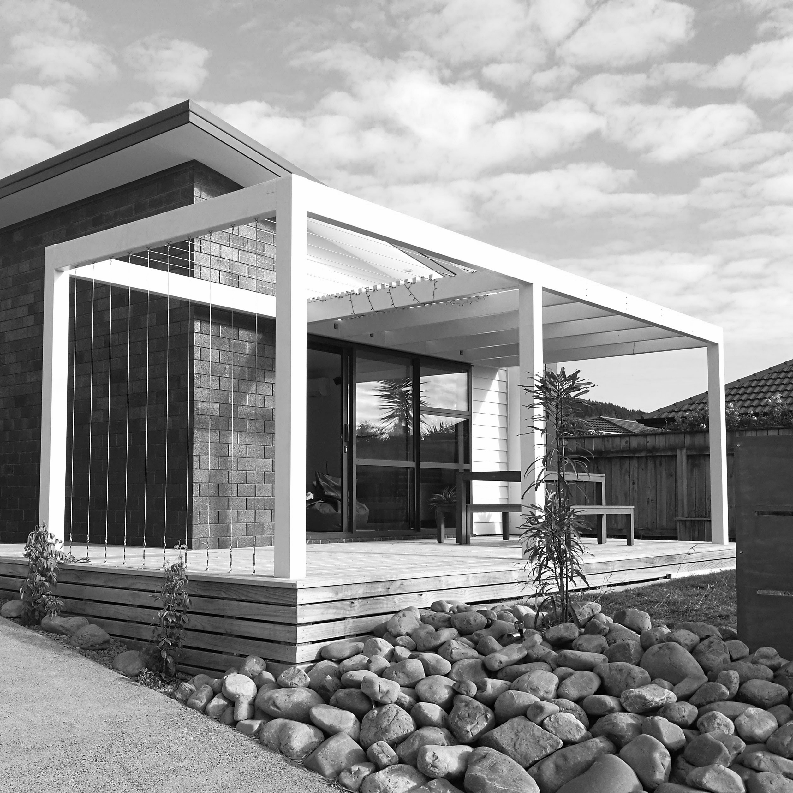
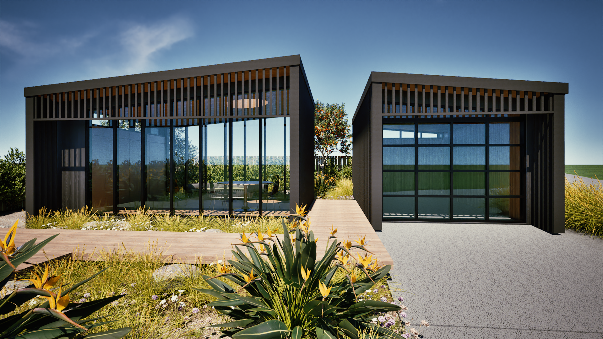
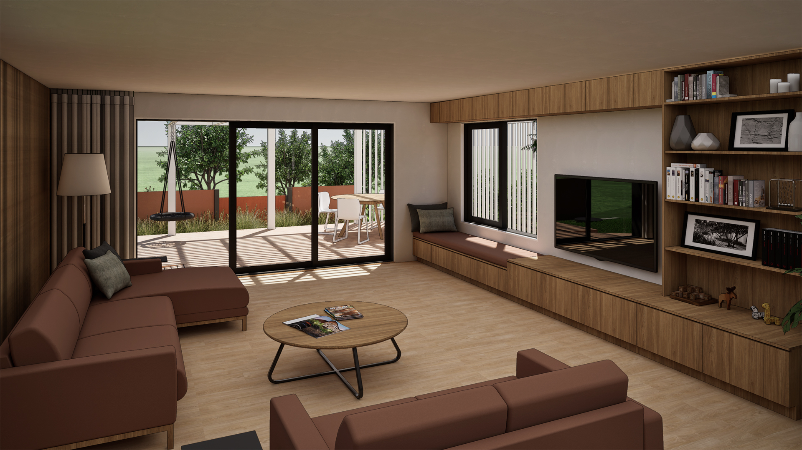
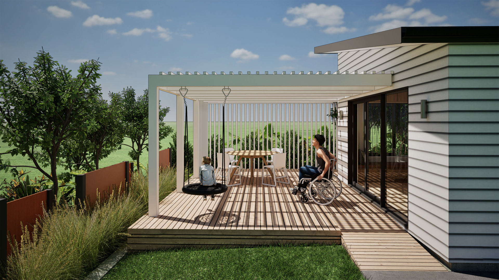

Kapiti Coast · Porirua · Wellington · Horowhenua
Interested in bringing your architectural vision to life?
Architectural excellence with a personalised touch.
Architecture is about people and their experience. Designing functional, sustainable and beautiful spaces with a sense of space that works for them.
Get in touchWhat Guides the Work
Our Values
-
Authentic
Original design for your site and environment
-
Sustainable
Sustainable options wherever possible
-
Accessible
Spaces that work for varying abilities
-
Environmental
Designs that consider the environment
-
Collaborative
Working together to achieve your vision
-
Transparent
Honest and trustworthy
The Work
Services

New Builds
Are you looking to build your new home? I can design your new home with quality features and timeless elegance.

Alterations & Additions
Looking to alter or add to your existing home? I can design additions and alterations that fit your lifestyle, with quality features and timeless elegance.

Accessible Design
Have your living requirements changed? I can work with you to make your current or new home more accessible, functional, safe and easy to maintain.
Are you looking to build new, renovate or alter an existing residential, lifestyle or rural home on the Kapiti Coast, Porirua, Wellington or Horowhenua?
Get in touch